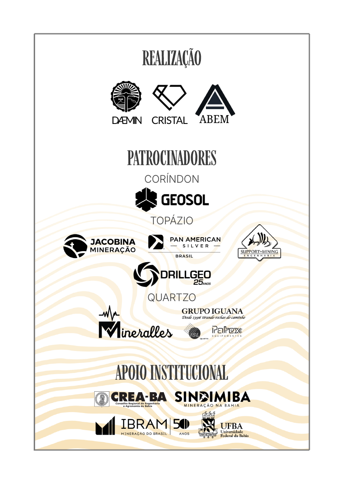
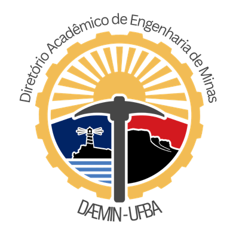
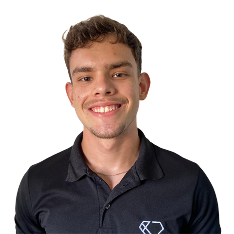
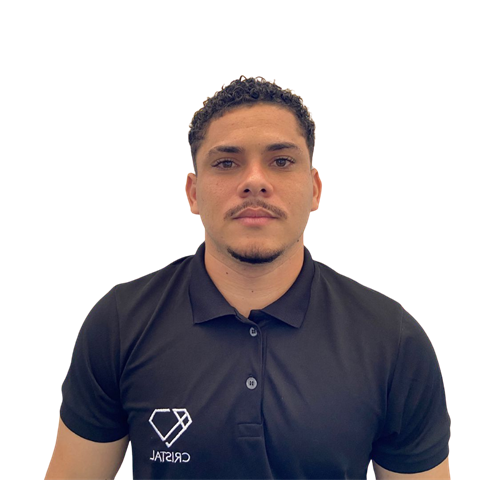
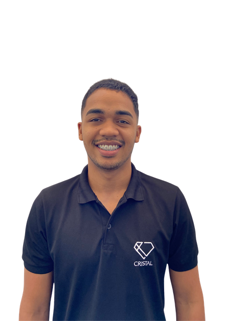

Conhecimento Técnico
Palestras, debates e apresentações de cases reais ligados aos desafios presentes e futuros do setor mineral.
SEMIN UFBA 2026 · 09 a 14 de Novembro
Leve a expertise da sua empresa para o centro da conversa entre universidade, indústria, profissionais e a próxima geração da mineração.
Atendimento direto com a coordenação para personalizar a presença da sua marca.
O evento
A SEMIN UFBA — Semana da Mineração da Universidade Federal da Bahia é um ambiente de encontro entre formação acadêmica, indústria, mercado e inovação.
Realizada na Escola Politécnica da UFBA, a iniciativa aproxima estudantes de empresas, profissionais, tecnologias e discussões presentes na realidade do setor mineral.
Para as empresas, representa uma oportunidade concreta de relacionamento qualificado com futuros profissionais, comunidade acadêmica e diferentes agentes atuantes na mineração.
Palestras, debates e apresentações de cases reais ligados aos desafios presentes e futuros do setor mineral.
Aproximação direta entre graduandos, pós-graduandos, pesquisadores, instituições e grandes empresas.
Espaço para exibição de equipamentos, softwares, soluções aplicadas e demonstrações práticas.
Estrutura da Semana
Com base no projeto oficial do SEMIN 2026, a programação foi desenhada para levar o participante da capacitação prática às solenidades e encerramento do Jubileu de Ouro.
Atividades técnicas, minicursos e capacitações práticas voltadas ao crescimento profissional e à aproximação com ferramentas e desafios do setor.
Palestras com especialistas do setor, coffee break, continuidade das temáticas e painel de debates no Auditório Leopoldo Amaral.
Solenidades comemorativas, homenagem a egressos, lançamento da 2ª edição de Sagrado e Profano, documentário dos 50 anos e Festa do Engenheiro de Minas.
14 de novembro · Solenidades e Jubileu de Ouro
O ponto alto do cinquentenário reúne solenidades oficiais, memória, reconhecimento, conteúdo e celebração entre gerações.
Tributo aos pioneiros e In Memoriam àqueles que deixaram marcas na Escola Politécnica e na mineração brasileira.
Lançamento da segunda edição da obra que resgata a primeira década da Engenharia de Minas da UFBA.
Uma narrativa audiovisual que reúne depoimentos de egressos, docentes e protagonistas, imagens de arquivo e cenas do Jubileu. O filme preservará a memória dos pioneiros, celebrará as gerações formadas desde 1976 e projetará os próximos capítulos da Engenharia de Minas da UFBA.
Um encontro festivo e solene para aproximar veteranos, profissionais e futuros engenheiros em networking entre gerações.
1976 — 2026 · Edição comemorativa
Em 2026, o curso de Engenharia de Minas da Escola Politécnica da Universidade Federal da Bahia completa 50 anos.
São cinco décadas de formação de profissionais, pesquisadores, gestores e lideranças que passaram a atuar em diferentes segmentos da indústria mineral.
A SEMIN UFBA 2026 integra esse momento histórico, conectando o legado construído desde 1976 aos profissionais, empresas, tecnologias e desafios que contribuirão para os próximos capítulos da mineração.
50 anos olhando para trás. Uma edição inteira olhando para frente.
Público do Evento
Engenharia de Minas, Geologia, Engenharia de Petróleo, outras Engenharias e áreas correlatas — interessados em carreira, estágio, mercado, tecnologia e networking.
Engenheiros, geólogos, técnicos, gestores e especialistas relacionados ao setor.
Mineradoras, consultorias, prestadoras de serviços, empresas de tecnologia, fornecedores e fabricantes de equipamentos.
Professores, pesquisadores e comunidade acadêmica.
Entidades profissionais e organizações relacionadas à Engenharia, mineração e geociências.
Sua empresa estará conectada a quem está entrando, atuando e construindo o futuro do setor mineral.
Posicionamento Estratégico
Na SEMIN UFBA 2026, o patrocínio pode combinar visibilidade, troca técnica e relacionamento com uma rede que conecta o presente e o futuro da mineração.
Leve cases, profissionais, tecnologias e visão de mercado para um ambiente voltado à formação e à inovação.
Vincule sua marca a conteúdos e experiências comemorativas que preservam a memória da Engenharia de Minas da UFBA.
Ative sua presença antes, durante e depois do evento, conforme a modalidade de parceria escolhida.
O próximo passo é simples: escolha a presença que sua empresa quer construir — ou converse conosco para desenhar uma parceria.
Empresas que já acreditam nesta edição
Empresas e organizações do setor já participam da construção da SEMIN UFBA 2026. Uma nova parceria pode ampliar a presença da sua marca nesta edição comemorativa.
Quero colocar minha marca nesta edição
Por que patrocinar
O patrocínio transforma conhecimento técnico, marca e relacionamento em uma experiência relevante para quem está entrando, atuando e liderando o setor.
Aproxime sua empresa dos futuros profissionais da mineração.
Associe sua expertise às discussões, cases e desafios que movimentam a indústria mineral.
Crie relacionamento com estudantes, profissionais, pesquisadores, empresas e instituições.
Fortaleça sua presença entre estudantes interessados em construir carreira na indústria.
Apresente produtos, equipamentos, serviços e soluções ao público em um contexto técnico.
Associe sua empresa às comemorações dos 50 anos da Engenharia de Minas da UFBA.
Formatos de Participação
A participação de uma empresa na SEMIN UFBA pode ir além da exposição da sua identidade visual.
Ativações técnicas
Além das cotas tradicionais, a SEMIN UFBA poderá construir, junto às empresas parceiras, ativações técnicas e demonstrações presenciais de tecnologias utilizadas no setor mineral.
Retorno ao Longo do Tempo
Divulgação, comunicação digital, associação da marca à edição e preparação de ativações.
Presença institucional, relacionamento, exposição, conteúdo, networking e experiências.
Fotografias, registros, vídeos, conteúdos, memória da edição e permanência da associação aos materiais produzidos quando prevista na cota.
Universidade + indústria
Os profissionais que ocuparão posições técnicas, gerenciais e estratégicas nos próximos anos estão hoje construindo sua formação.
Criar oportunidades de contato entre estudantes e empresas permite aproximar conhecimento acadêmico, mercado, tecnologia e realidade industrial.
Cotas de patrocínio
Da presença institucional ao patrocínio de legados do Jubileu: encontre a modalidade que transforma o objetivo da sua empresa em uma presença relevante no evento.
Encontre seu melhor caminho
Brindes, folhetos e materiais utilizados no espaço de exposição são de responsabilidade do patrocinador.
Cota Diamante · legado audiovisual
Mais do que uma entrega de visibilidade, esta é uma oportunidade de associar sua empresa a uma obra de memória, reconhecimento e futuro.
direcionados à produção do documentário comemorativo dos 50 anos.
O filme
O documentário reunirá depoimentos de egressos, docentes e protagonistas do curso, imagens de arquivo e registros do Jubileu. A narrativa resgata os pioneiros, mostra a contribuição de diferentes gerações para a mineração brasileira e aponta os próximos capítulos da formação na UFBA.
Imagens, relatos e marcos que preservam a trajetória iniciada em 1976.
Vozes de quem ensinou, estudou e ajudou a transformar o curso em referência.
Uma celebração que conecta o legado construído aos desafios da mineração que vem pela frente.
Oportunidade exclusiva
Sua empresa pode financiar integralmente a produção e se tornar a Patrocinadora Master da edição histórica dos 50 anos. A parceria terá reconhecimento de destaque e contrapartidas construídas com a organização.
Flexibilidade & Personalização
Além das modalidades de patrocínio, a organização está aberta a analisar formas complementares de participação que gerem valor para o evento, os estudantes e a empresa parceira.
Equipamentos, tecnologias e demonstrações.
Possibilidade de apresentar soluções utilizadas em operações e projetos reais.
Participação de especialistas e profissionais.
Experiências, demonstrações ou discussões técnicas.
Participação de entidades e organizações do setor.
Fornecimento de itens ou serviços úteis para a experiência e realização do evento.
Ativações adicionais estão sujeitas à avaliação técnica, disponibilidade de espaço, segurança e aprovação da organização.
Simples e transparente
O processo de parceria é direto, ágil e acompanhado de perto pela comissão organizadora.
Selecione a cota mais aderente aos objetivos da sua marca ou proponha uma ativação técnica personalizada.
Conversa direta com a coordenação para detalhar temas de palestras, estandes, materiais e cronograma de entregas.
Emissão do termo de compromisso institucional, inclusão imediata da marca nas mídias e preparação para a semana de 09 a 14/nov.
Dúvidas frequentes
Esclarecimentos diretos sobre contrapartidas, prazos e participação na SEMIN UFBA 2026.
A formalização é realizada institucionalmente através das entidades realizadoras (DAEMIN e CRISTAL Empresa Júnior da UFBA), com emissão de termo de compromisso e documentação formal das contrapartidas acordadas.
Sim. Nas cotas com espaço de fala (Diamante, Córindon e Topázio), o tema da palestra ou participação em painel é alinhado em conjunto com a coordenação do evento para conectar a experiência da empresa ao norte técnico da edição.
O espaço físico para estandes e demonstrações é localizado nas áreas de circulação do Auditório Leopoldo Amaral, na Escola Politécnica da UFBA, com montagem e materiais promocionais sob responsabilidade da empresa parceira.
A Cota Diamante e a oportunidade Master conferem reconhecimento de mecenas/patrocinadora na produção audiovisual histórica e a aplicação da logomarca no estojo comemorativo da moeda dos 50 anos.
Sim. Além das 4 cotas principais, a comissão organizadora está aberta para estruturar ativações sob medida (demonstrações de equipamentos, softwares, drones e sensores) conforme a viabilidade técnica e de segurança do espaço.
Tem outra dúvida específica para a sua empresa?
Tirar dúvidas com a coordenaçãoRealização e comissão organizadora
DAEMIN e CRISTAL, junto à comissão organizadora, unem formação, estratégia e operação para conectar universidade, indústria e empresas parceiras.
Realização

Comissão organizadora

Presidência

Marketing e estratégia

Financeiro
SEMIN UFBA 2026
Transforme expertise, marca e propósito em uma presença relevante na edição que celebra 50 anos da Engenharia de Minas da UFBA.
A organização está disponível para orientar o melhor formato de participação.